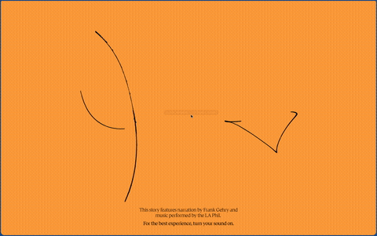

Hover
Box trails cursor

Loading the page lands you on a bright orange screen with black lines being animated and a invitation to enable sound following the cursor. The colour palette is bold and easily legible. After clicking as prompted, orchestral music begins to play and the entire page begins to animate. This reveals an illustration reminiscent of the earlier animated lines flys in scaling down until it is fully in view centre screen. Finally the illustration pans up, revealing bold black text growing from below. The text remains the same width but scales along y-axis in a wave.
Box trails cursor
box follows.
sound begins, animation triggered
text appears trailing movement, illustration warps to follow
text trail disappears, lower page animates, illustration warps to follow
bottom text scales with scroll driven animation, reveals full screen image.
image animates with scroll-sequencing creating a video, text appearing
transition, video wipes away revealing illustration text wipes in along y-axis
illustration warps following cursor
transition full screen video carousel wipes up, video auto-plays
window trails cursor movement.
initiate second video on carousel.
video pauses, text appears, button appears, text wipes up.
button text animates, scroll up, text disappears, video resumes.
text wipes up with green background, text animates when hitting top of the screen, scales down on y-axis
reveals images, text, box widens on x-axis with scroll, justified right.
text is selectable.
end of parent element, box widens to whole window, image wipes up from bottom, illustration, blue background, black bold text wipes up, reveal chapter title element
illustration warps following cursor.
chapter element wipes up revealing video carousel, video auto-plays
initiate next carousel video
reveal image gallery grid
image gallery element scales down
gallery card appears over page, reveals quick view overlay
overlay disappears
scroll to top of page
bold text wipes down, animated y-axis variable scaling between characters, menu navigation overlay wipes down over entire screen
button underline animates
menu navigation overlay & bold text wipes up, jump to page chapter section
text appears, disappears on hover off
page shrink tranisiton scaling down, transition to 3d model page, screen darkens, text and icon appear, invitation to interact
screen lightens, text and icon dissapear, buttons appear
3D model rotates with cursor movement, buttons follow 3D model movement
image appears scaling out
3d model rotating transition out, card appears scaling out, image background, text description, button appears below card
card scales down disappearing, 3d model rotates back in
3d model page transition scaling down, return to last position main page.
This website is a scroll-driven interactive narrative. The scroll behaviours were varied and hold the vast majority of attention. Despite being asset and interaction rich with images, videos, animated text, cards, hover trailing windows, 3D interactive models and more, the scrolling behaviours were the most intriguing interaction available. Main webpages have begun to implement similar scroll behaviours but the quantity and variety used here are uncommon and well executed.
As to be expected, clicking was the most common action performed. That said, scrolling is a vital action with this page and created a higher variety and proportion of interactions then many other websites. A click delivers an interaction near instantly, however scrolling is ongoing and this page almost always had a scroll behaviour ready to interact with throughout the entire page.
This website is a scrollable narrative and entire digital exhibition. It's goal is clearly to inform the audience about the story of Frank Gehry's design process of the Disney Concert Hall in Los Angeles, California. This narrative is accompanied by a feature-rich and highly interactive webpage to create an engaging and memorable user experience. It does well to create a desire to visit the building and regard it above another typical concert hall. This experience elevates the building into a thoughtfully designed work of art.
Despite being on hosted on the Getty Organisation's domain, the page rarely if ever links outside of this specific webpage. This keeps all attention on the timelinecontent contained within the website, interaction only taking the user deeper through the narrative it presents.
There are plenty of interactions, text, image, and video assets to fill the user's time with. The more observant or interested user can interact and experiment with page elements, click buttons to reveal further text, view further information via cards, interact with 3D models, and view through the entire image gallery at the end. This takes 20-30 minutes.
A rushed or disinterested user may quickly scan the text, glance at the images and and watch through the videos once, visiting the page for under 10 minutes.
In an interrupted visit to the page, the inclusion of a chapter hierarchy and a menu which can navigate these chapters allows the user to easily and quickly pick back up where they timelineleft off.
The timelinecontent appears completed and published in its entirety, being unlikely to have new timelinecontent added. Rushing through the page would certainly afford a different experience on the next visit, but I doubt this would be a page returned to more than several times. However,
Being a captivating webpage, some may share the experience with others again after first visiting. That said, after careful exploration of the entire page, there is not much indication any return visit would be met with new additional timelinecontent. There are also no external links to explore further.
Despite being a webpage in association with a concert hall and on the domain of an arts & media foundation, this webpage is not reminiscent of many other pages of a similar character. Instead, this page uses a high level of complex interactive web design, which is more to be expected of a design firm, or prestigious museum / institution with a dedicated online presence. All aspects of the website indicate professional, carefully curated timelinecontent. That said, the implementation of video carousels and image galleries with quick-view overlays is similar to what you would see on many e-commerce websites.
The media references on the site, including interactive 3D models and detailed imagery, communicate that I should act as an active explorer, taking time to engage with each element and follow my curiosity through the every end of its layout, rather than passively reading or just skimming timelinecontent.
The references on the site evoke a sense of curiosity and wonder, encouraging me to feel both engaged and contemplative. The immersive design and interactive elements make the research experience feel dynamic and exploratory, rather than static or purely academic. The professional presentation of the webpage, its engaging and interactive design, and the detailed narrative it provides all indicate that the building it explores and the architect who designed it are prestigious and worth being studied and celebrated.
While the webpage is beautiful and timelinecontent rich, the high quantity and quality of assets within the page take a while to load. The choice to include all of it within a single scrolling page, while deliberate, means that experience is inaccessible or stunted to users on older or less powerful devices.
Implementing this level of scroll behaviours also relies on an assumed speed and linear path for the user to navigate the page. The menu and chapter hierarchy does well to try address this, but any veer off the intended user path cause a disruption to the presentation and immersion.
This website has very few flaws and the level of polish are superb. The site’s restrained aesthetic and fluid transitions create a focused and engaging experience. This is a masterful example of interactivity to communicate spatial ideas, processes, and materiality, the website demonstrates how effective web design can deepen engagement beyond what static timelinecontent allows.